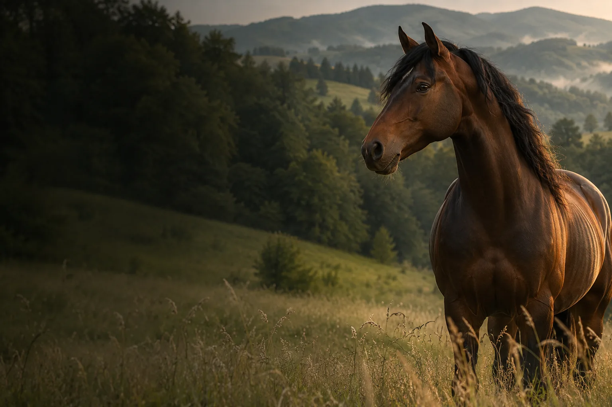
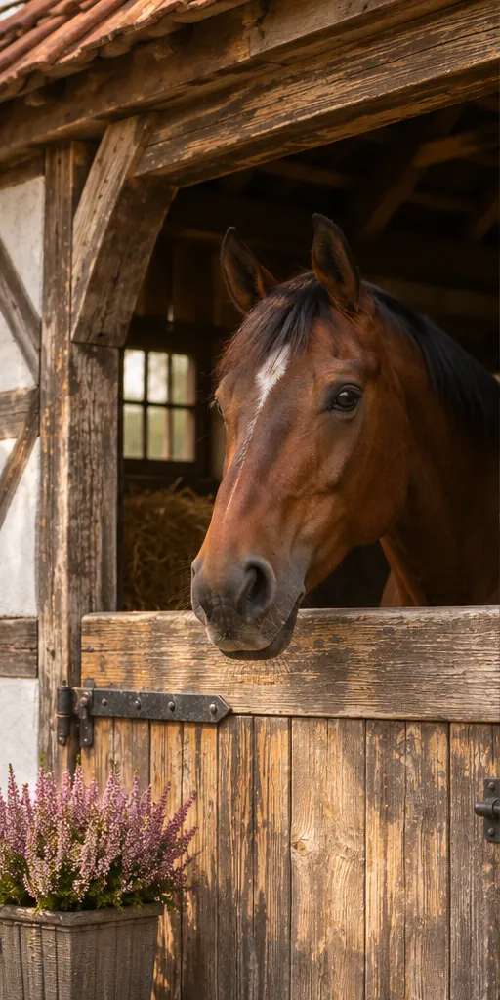
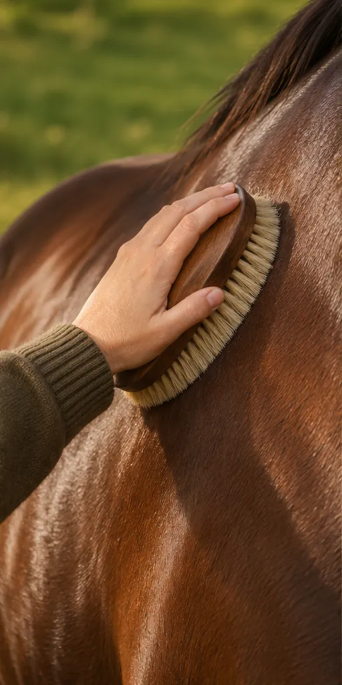
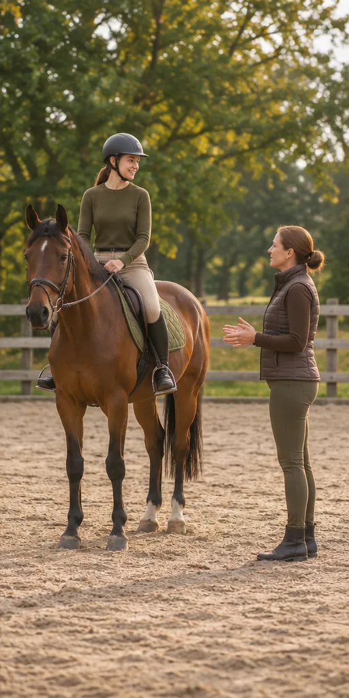

Pierwszy raz w siodle
Twoja przygoda
z końmi zaczyna
się tutaj.
Jednodniowe warsztaty jazdy konnej dla dorosłych. Poznaj konia i usiądź w siodle pod opieką instruktora w okolicach Krakowa.
Zgłoś zainteresowanieDoświadczenie jeździeckie nie jest wymagane.
- Czas trwania
- 4 godziny
- Lokalizacja
- Okolice Krakowa
- Wielkość grupy
- Do 6 osób
- Cena demonstracyjna
- 249 zł / os.
Co zyskasz
Czas dla siebie.
Przestrzeń na nową pasję.
Pierwszy kontakt z jeździectwem
Zaczniesz na ziemi i oswoisz się z obecnością konia.
Nowe umiejętności
Spróbujesz pielęgnacji konia i podstaw jazdy.
Relacja z koniem
Nauczysz się obserwować jego zachowanie i reagować spokojnie.
Ruch na świeżym powietrzu
Spędzisz kilka godzin w otoczeniu stajni, łąk i przyrody.
Kameralna grupa
W grupie do sześciu osób będzie miejsce na pytania i praktykę.
Wsparcie instruktora
Instruktor dobierze ćwiczenia i tempo do Twojej gotowości.
Program warsztatów
Od pierwszego spotkania do pierwszej jazdy.
Przez cztery godziny poznasz kolejne etapy pracy z koniem. Na każdym możesz zadać pytanie lub poprosić o powtórzenie ćwiczenia.
Poznaj konia i zasady bezpieczeństwa
Dowiesz się, jak podchodzić do konia, poruszać się przy nim i rozpoznawać jego sygnały.
Przygotuj konia do jazdy
Spróbujesz szczotkowania i zobaczysz, jak instruktor dobiera oraz zakłada sprzęt.
Oswój się z siodłem
Poznasz podstawy dosiadu, równowagi i spokojnej komunikacji z koniem.
Spróbuj pierwszej jazdy
W dopasowanym kasku przećwiczysz jazdę w tempie dobranym przez instruktora.
Informacje organizacyjne
Zanim przyjedziesz
Jedno popołudnie w stajni. Ubierz się wygodnie i odpowiednio do pogody.
- Czas
- 4 godziny w ciągu jednego dnia
- Miejsce
- Okolice Krakowa
- Grupa
- Maksymalnie 6 osób dorosłych
- Poziom
- Brak lub niewielkie doświadczenie
- Wyposażenie
- Dopasowany kask i sprzęt do ćwiczeń na miejscu. Weź długie spodnie i pełne buty z niewielkim obcasem.
- Cena
- 249 zł za osobę, cena demonstracyjna
Dla kogo
Możesz zacząć od zera.
Jeśli dopiero odkrywasz jeździectwo albo masz za sobą kilka prób, możesz ćwiczyć w swoim tempie. Gdy czujesz się niepewnie, powiedz o tym instruktorowi. Pierwsze ćwiczenia odbywają się na ziemi, a do siodła przejdziesz, gdy będziesz gotowy lub gotowa.



FAQ
Przed pierwszą wizytą
Czy muszę umieć jeździć konno?
Możesz wziąć udział bez doświadczenia. Zaczynamy od kontaktu z koniem na ziemi i krok po kroku przechodzimy do jazdy.
Czy potrzebuję własnego sprzętu?
Na miejscu otrzymasz dopasowany kask i wyposażenie do ćwiczeń. Zabierz odpowiednie ubranie i buty.
Jak przygotować się do warsztatów?
Weź długie spodnie, pełne buty z niewielkim obcasem, odzież na zmianę pogody i wodę.
Czy warsztaty są odpowiednie dla osób, które obawiają się koni?
Tak. Powiedz instruktorowi, czego się obawiasz. Możesz najpierw obserwować i zdecydować, kiedy podjąć kolejne ćwiczenie.
Jak dbamy o bezpieczeństwo?
Instruktor pokazuje zasady podejścia do konia i nadzoruje ćwiczenia. Do jazdy zakładasz dopasowany i zapięty kask.
Ile trwają warsztaty?
Cały program trwa około czterech godzin i odbywa się jednego dnia.
Co zawiera cena?
Demonstracyjna cena 249 zł obejmuje cały program, opiekę instruktora oraz sprzęt udostępniany na miejscu.
Zrób pierwszy krok w stronę swojej nowej pasji.
Zgłoś zainteresowanieFormularz demonstracyjny
Zgłoś zainteresowanie
Użyj wyłącznie danych fikcyjnych, na przykład imienia „Anna” i adresu test@example.com. Formularz jest częścią projektu edukacyjnego.
Zgłoszenie demonstracyjne ukończone
Demonstracja zakończona — dane nie zostały wysłane